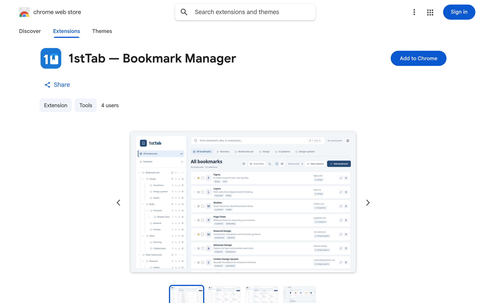
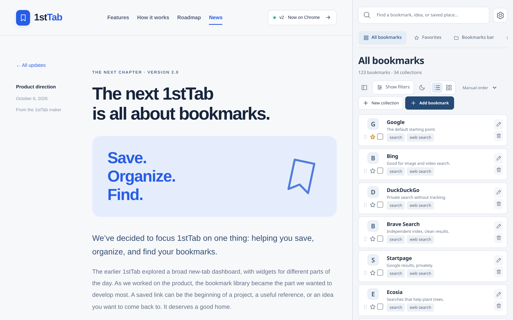
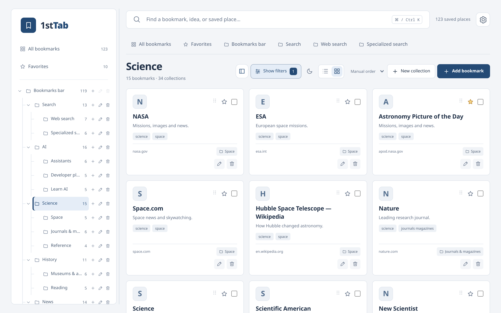
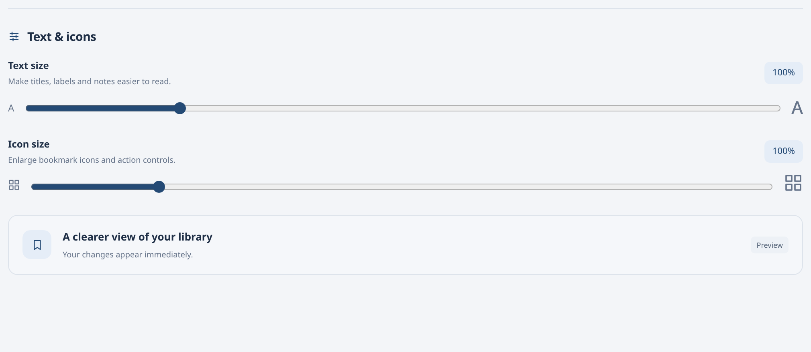
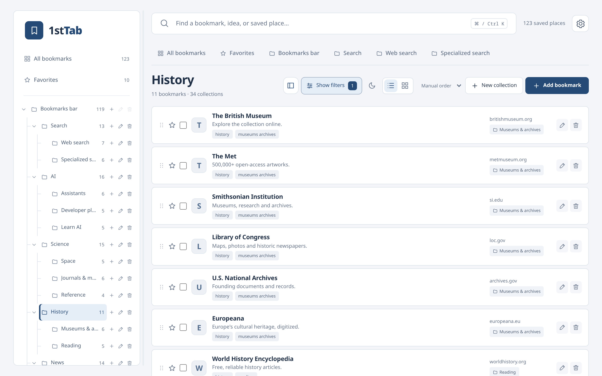
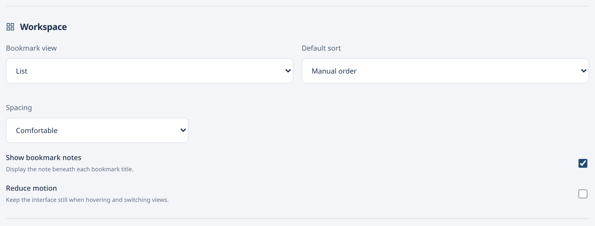
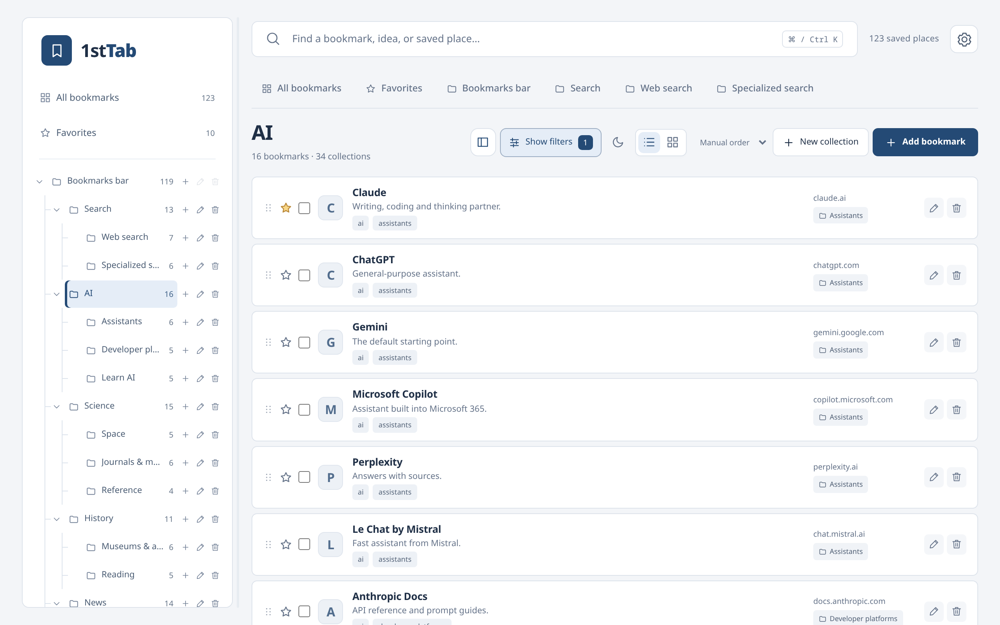
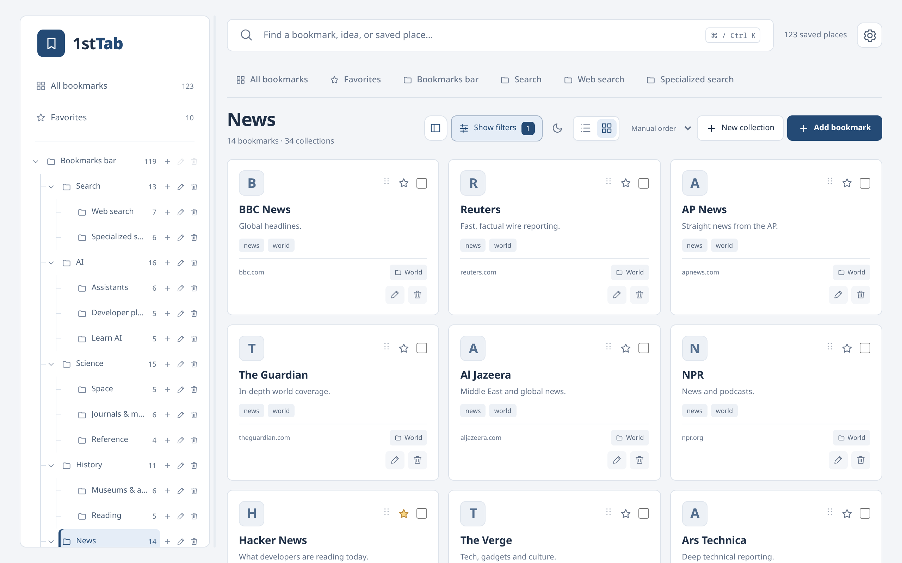
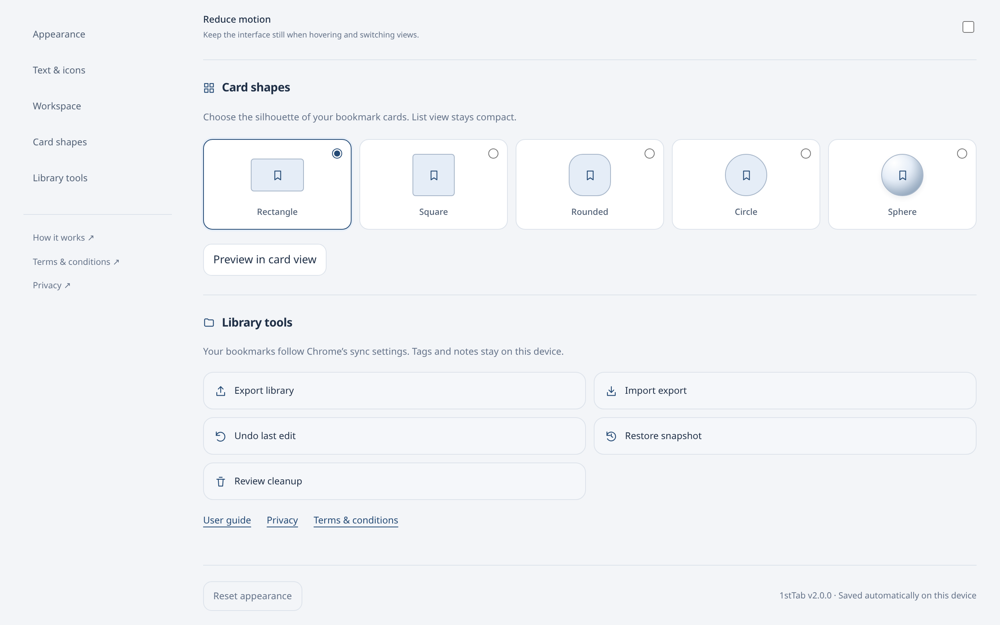

NOW AVAILABLE · VERSION 2.0
1stTab v2 is now
on the Chrome Web Store.
Organize.
Find.
The bookmark-focused 1stTab is here. Version 2.0 is published on the Chrome Web Store, and you can add it to Chrome today.
A few days ago we shared our new direction: one product, built around saving, organizing, and finding the links that matter. Today that release is live. Look for 1stTab — Bookmark Manager in the Chrome Web Store, or use the link below.

Your new tab becomes your library
Once installed, every new tab opens your bookmark library. 1stTab works with the Chrome bookmarks you already have—there is nothing to import and no account to create. Changes you make appear in Chrome’s own bookmark manager.
Browse collections and nested folders in a resizable tree, drag items to reorder them, and switch between a compact list and a card grid. Search looks at titles, URLs, tags, and notes, and filters narrow the view to a collection, tag, domain, or your favorites.
Save something good, from anywhere
Save the page you’re on from the toolbar, or open 1stTab in Chrome’s side panel to keep your library next to whatever you’re reading. Add notes and tags to give saved links context, so future you knows why they mattered.

Make it feel like yours
Settings has its own page, and every change saves automatically on this device. Here’s what you can adjust.
Five themes, light or dark
Pick the look that suits the way you work: Prism in violet and ink, warm and editorial Atelier, clean and precise Studio, playful Pop, or focused Enterprise. Every theme comes in light and dark, or can follow your system setting. Choose a theme below to see it.

Text and icon size
Make titles, labels, and notes easier to read with text from 90% up to 140%, and enlarge bookmark icons and action controls separately, up to 150%. Changes appear immediately across your library. Drag the sliders below to see the Settings panel and the History collection at each size.


Your workspace, your defaults
The Workspace settings choose how your library opens. Pick cards or a list and a default sort: manual order, name A–Z, or newest first. Compact spacing fits more on screen, you can hide the note beneath each title for a cleaner list, and Reduce motion keeps the interface still when you hover and switch views.

Here’s how those choices change the AI collection. Switch the options to compare.

Card shapes
In card view, choose the silhouette of your bookmark cards: rectangle, square, rounded, circle, or sphere. List view stays compact whichever shape you pick.

Library tools
Everything that keeps your library safe is in one place. Export your library as JSON, import an export after previewing it, undo your last edit, restore a snapshot, and review cleanup suggestions for duplicate links and empty folders. Reset appearance returns the look to its defaults.

Your library stays yours
The v2 release works locally and doesn’t need an account. Your native bookmarks follow Chrome’s own sync settings. 1stTab tags, notes, favorites, and preferences stay on your device. Export a copy from Library tools whenever you like, especially before big reorganizations. Read the privacy page for details.
What comes next
With v2 out, we’re turning to the roadmap: sync through Google Drive as an optional connection, followed by sync between Google accounts. Neither is part of v2. We’ll share availability here when that work is ready. See the roadmap for the plan.
Tell us how it’s going
This is the first release of the new 1stTab, and your feedback will shape the next one. If 1stTab is useful to you, a rating or review on the Chrome Web Store helps other people find it. You can also suggest a feature, report a problem, or get in touch.
Thank you for following along. Save something good.